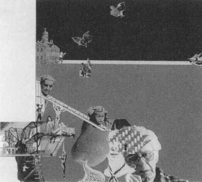
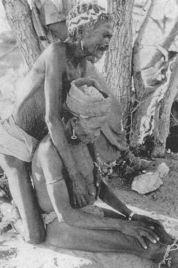
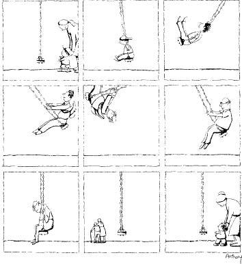
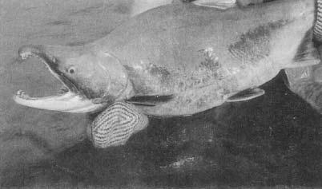
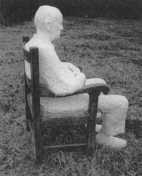

Predictably, it comes at the most unpredictable times. I’ll be lecturing, bored, telling the same story about neurons I did last year, daydreaming, looking at the ocean of irritatingly young undergraduates, and then it hits, producing almost a sense of wonderment. “How can you just sit there? Am I the only one who realizes that we’re all going to die someday?” Or I’ll be at a scientific conference, this time barely understanding someone else’s lecture, and amid the roomful of savants, the wave of bitterness will sweep over me. “All of you damned medical experts, and not one of you can make me live forever.”
Predictably, it comes at the most unpredictable times. I’ll be lecturing, bored, telling the same story about neurons I did last year, daydreaming, looking at the ocean of irritatingly young undergraduates, and then it hits, producing almost a sense of wonderment. “How can you just sit there? Am I the only one who realizes that we’re all going to die someday?” Or I’ll be at a scientific conference, this time barely understanding someone else’s lecture, and amid the roomful of savants, the wave of bitterness will sweep over me. “All of you damned medical experts, and not one of you can make me live forever.”
It first really dawns on us emotionally sometime around puberty. Woody Allen, once our untarnished high priest of death and love, captures its roundabout assault perfectly in Annie Hall. The protagonist is shown, in flashback, as a young adolescent. He is sufficiently depressed for the worried mother to drag him to the family doctor—“Listen to what he keeps saying, what’s wrong with him, does he have the flu?” The Allenesque adolescent, glazed with despair and panic, announces in a monotone: “The universe is expanding.” It’s all there—the universe is expanding; look how big infinity is and how finite we are—and he has been initiated into the great secret of our species: we will die and we know it. With that rite of passage, he has found the mother lode of psychic energy that fuels our most irrational and violent moments, our most selfish and our most altruistic ones, our neurotic dialectic of simultaneously mourning and denying, our diets and exercising, our myths of paradise and resurrection. It’s as if we were trapped in a mine, shouting out for rescuers, Save us, we’re alive but we’re getting old and we’re going to die.

Morris Zlapo, Gepetto’s Dementia, collage, 1987.
And, of course, before dying, most of us will become old, a process aptly described as not for sissies: wracking pain. Dementia so severe we can’t recognize our children. Cat food for dinner. Forced retirement. Colostomy bags. Muscles that no longer listen to our commands, organs that betray us, children who ignore us. Mostly that aching sense that just when we finally grow up and learn to like ourselves and to love and play, the shadows lengthen. There is so little time.
Oh, it doesn’t have to be that bad. For many years I have spent part of each year doing stress research on wild baboons in East Africa. The people living there, like many people in the nonwesternized world, clearly think differently about these issues than we do. No one seems to find getting old depressing. How could they?—they wait their whole lives to become powerful elders. My nearest neighbors are of the Masai tribe, nomadic pastoralists. I often patch up their various minor injuries and ills. One day, one of the extremely old men of the village (perhaps sixty years old) tottered into our camp. Ancient, wrinkled beyond measure, tips missing from a few fingers, frayed earlobes, long-forgotten battle scars. He spoke only Masai and not Swahili, the lingua franca of East Africa, so he was accompanied by his more worldly, middle-aged neighbor, who translated for him. He had an infected sore on his leg, which I washed and treated with antibiotic ointment. He also had trouble seeing—“cataracts” was my barely educated guess—and I explained that they were beyond my meager curative powers. He seemed resigned, but not particularly disappointed, and as he sat there cross-legged, naked except for the blanket wrapped around him, basking in the sun, the woman stood behind him and stroked his head. In a voice as if describing last year’s weather she said, “Oh, when he was younger, he was beautiful and strong. Soon he will die.” That night in my tent, sleepless and jealous of the Masai, I thought, “I’ll take your malaria and parasites, I’ll take your appalling infant mortality rates, I’ll take the chances of being attacked by buffalo and lions. Just let me be as unafraid of dying as you are.”

An elderly hunter-gatherer shaman in the Kalahari Desert.
Maybe we will luck out and wind up as respected village elders. Perhaps we will grow old with grace and wisdom. Perhaps we will be honored, surrounded by strong, happy children whose health and fecundity will feel like immortality to us. Gerontologists studying the aging process find increasing evidence that most of us will age with a fair degree of success. There’s far less institutionalization and disability than one might have guessed. While the size of social networks shrink with age, the quality of the relationships improves. There are types of cognitive skills that improve in old age (these are related to social intelligence and to making good strategic use of facts, rather than merely remembering them easily). The average elderly individual thinks his or her health is above average, and takes pleasure from that. And most important, the average level of happiness increases in old age; fewer negative emotions occur and, when they do, they don’t persist as long. Connected to this, brain-imaging studies show that negative images have less of an impact, and positive images have more of an impact on brain metabolism in older people, as compared to young.

So maybe old age is not so bad. The final chapter of this book reviews some of the patterns seen in aged people who are particularly successful in their aging. The purpose of this chapter is to review what stress has to do with the aging process and whether we wind up with the honored village elder model of aging, or the cat food variant.
Aged Organisms and Stress
How do aged organisms deal with stress? Not very well, it turns out. In many ways, aging can be defined as the progressive loss of the ability to deal with stress, and that certainly fits our perception of aged individuals as fragile and vulnerable. This can be stated more rigorously by saying that many aspects of the bodies and minds of old organisms work fine, just as they do in young ones, so long as they aren’t pushed. Throw in an exercise challenge, an injury or illness, time pressure, novelty—any of a variety of physical, cognitive, or psychological stressors—and aged organisms don’t do so well.
“Not doing so well” in the stress-response department can take at least two forms that should be familiar by now. The first is failing to activate a sufficient stress-response when it is needed. This occurs at many levels during aging. For example, individual cells have a variety of defenses they can mobilize in response to a challenge that can be viewed as a cellular stress-response. Heat a cell to an unhealthy extent and “heat shock proteins” are synthesized to help stabilize cellular function during a crisis. Damage DNA and DNA repair enzymes are activated. Generate oxygen radicals and antioxidant enzymes are made in response. And all of these cellular stress-responses become less responsive to challenge during aging.
A similar theme comes through at the level of how whole organ systems respond to stress. For example, after you eliminate from your study elderly people who have heart disease and look only at healthy subjects of different ages (so as to study aging, instead of inadvertently studying disease), many aspects of cardiac function are unchanged by age. But challenge the system with exercise, for example, and old hearts do not respond as adequately as do young ones, in that the maximal work capacity and the maximal heart rate that can be achieved are nowhere near as great as in a young person.* Similarly, in the absence of stress, old and young rat brains contain roughly the same amount of energy. But when you stress the system by cutting off the flow of oxygen and nutrients, energy levels decline faster in the old brains. Or, as a classic example, normal body temperature, 98.6 degrees, does not change with age. Nevertheless, aged bodies are impaired in mounting a thermoregulatory stress-response, and thus it takes the bodies of the elderly longer to restore a normal temperature after being warmed or chilled.
The idea also applies to measures of cognition. What happens to IQ test scores as people get older? (You’ll notice that I didn’t say “intelligence.” What that has to do with IQ test scores is a controversy I don’t want to touch.) The dogma in the field was once that IQ declined with age. Then it was that it did not decline. It depends on how you test it. If you test young and old people and give them lots of time to complete the test, there is little difference. As you stress the system—in this case, by making the subjects race against a time limit—scores fall for all ages, but much further among older people.
So sometimes the problem in aging is not enough of a stress-response. Predictably, in some realms, the problem is too much of a stress-response—either one turned on all the time, or one that takes too long to turn off at the end of a stressor.
As an example, older individuals are impaired at turning off epinephrine, norepinephrine, or glucocorticoid secretion after a stressor has finished; it takes longer for levels of these substances to return to baseline. Moreover, even in the absence of the stressor, epinephrine, norepinephrine, and glucocorticoid levels are typically elevated in aged rats, nonhuman primates, and humans as well.*
Do aged organisms pay a price for having these components of the stress-response turned on too often? This seems to be the case. As one example, which was discussed in the chapter on memory, stress and glucocorticoids inhibit the birth of new neurons in the adult hippocampus and inhibit the growth of new processes in preexisting neurons. Is the birth of new neurons and the elaboration of neuronal processes preferentially inhibited in old rats? Yes, and if their glucocorticoid levels are lowered, neurogenesis and process growth increase to levels seen in young animals.
We know by now that, ideally, the hormones of the stress-response should be nice and quiet when nothing bad is happening, secreted in tiny amounts. When a stressful emergency hits, your body needs a huge and fast stress-response. At the end of the stressor, everything should shut off immediately. And these traits are precisely what old organisms typically lack.*
Why You Seldom See
Really Old Salmon
We shift over to the other half of the aging-stress relationship—not whether aged organisms can deal well with stress, but whether stress can accelerate aspects of aging. There is some decent evidence that an excess of stress can increase the risk of some of the diseases of aging. Remarkably, it turns out that in more than a dozen species, glucocorticoid excess is the cause of death during aging.
Pictures of heroic wild animals, à la Marlin Perkins: penguins who stand all winter amid the Antarctic cold, keeping their eggs warm at their feet. Leopards dragging massive kills up trees with their teeth, in order to eat them free of harassment by lions. Desiccated camels marching scores of miles. And then there’s salmon, leaping over dams and waterfalls to return to the freshwater stream of their birth. Where they spawn a zillion eggs. After which most of them die over the next few weeks.
Why do salmon die so soon after spawning? No one is quite sure, but evolutionary biologists are rife with theories about why this and the rare other cases of “programmed die-offs” in the animal kingdom may make some evolutionary sense. What is known, however, is the proximal mechanism underlying the sudden die-off (not “How come they die, in terms of evolutionary patterns over the millennia?” but “How come they die, in the sense of which parts of the body’s functioning suddenly go crazy?”). It is glucocorticoid secretion.

A male sockeye salmon, after the onset of programmed aging.
If you catch salmon right after they spawn, just when they are looking a little green around the gills, you find they have huge adrenal glands, peptic ulcers, and kidney lesions; their immune systems have collapsed, and they are teeming with parasites and infections. Aha, kind of sounds like Selye’s rats way back when.* Moreover, the salmon have stupendously high glucocorticoid concentrations in their bloodstreams. When salmon spawn, regulation of their glucocorticoid secretion breaks down. Basically, the brain loses its ability to measure accurately the quantities of circulating hormones and keeps sending a signal to the adrenals to secrete more of them. Lots of glucocorticoids can certainly bring about all those diseases with which the salmon are festering. But is the glucocorticoid excess really responsible for their death? Yup. Take a salmon right after spawning, remove its adrenals, and it will live for a year afterward.
The bizarre thing is that this sequence of events not only occurs in five species of salmon, but also among a dozen species of Australian marsupial mice. All the male mice of these species die shortly after seasonal mating; cut out their adrenal glands, however, and they too keep living. Pacific salmon and marsupial mice are not close relatives. At least twice in evolutionary history, completely independently, two very different sets of species have come up with the identical trick: if you want to degenerate very fast, secrete a ton of glucocorticoids.
Chronic Stress and the Aging Process
in the Mainstream
That is all fine for the salmon looking for the fountain of youth, but we and most other mammals age gradually over time, not in catastrophic die-offs over the course of days. Does stress influence the rate of gradual mammalian aging?
Intuitively, the idea that stress accelerates the aging process makes sense. We recognize that there is a connection between how we live and how we die. Around 1900, a madly inspired German physiologist, Max Rubner, tried to define this connection scientifically. He looked at all sorts of different domestic species and calculated things like lifetime number of heartbeats and lifetime metabolic rate (not the sort of study that many scientists have tried to replicate). He concluded that there is only so long a body can go on—only so many breaths, so many heartbeats, so much metabolism that each pound of flesh can carry out before the mechanisms of life wear out. A rat, with approximately 400 heartbeats a minute, uses up its heartbeat allotment faster (after approximately two years) than an elephant (with approximately 35 beats per minute and a sixty-year life span). Such calculations lay behind ideas about why some species lived far longer than others. Soon the same sort of thinking was applied to how long different individuals within a species live—if you squander a lot of your heartbeats being nervous about blind dates when you’re sixteen, there would be that much less metabolic reserve available to you at eighty.
In general, Rubner’s ideas about life spans among different species have not held up well in their strictest versions, while the “rate of living” hypotheses about individuals within a species that his ideas inspired have been even less tenable. Nevertheless, they led many people in the field to suggest that a lot of environmental perturbations can wear out the system prematurely. Such “wear and tear” thinking fit in naturally with the stress concept. As we have seen, excessive stress increases the risks of adult-onset diabetes, hypertension, cardiovascular disease, osteoporosis, reproductive decline, and immune suppression. All of these conditions become more common as we age. Moreover, in chapter 4 it was shown that if you have a lot of the indices of allostatic load, it increases your risk of Metabolic syndrome; that same study showed that it increased your mortality risk as well.
We return to the tendency of very old rats, humans, and primates to have elevated resting levels of glucocorticoids in the bloodstream. Some aspect of the regulation of normal glucocorticoid secretion is disrupted during aging. To get a sense of why this happens, we must return to chapter 1’s interest about why the water tank on your toilet does not overflow when it’s refilling. Once again, the process of refilling can trigger a sensor—the flotation device—to decrease the amount of water flowing into the tank. Engineers who study this sort of thing term that process negative feedback inhibition or end-product inhibition: increasing amounts of water accumulating in the tank decrease the likelihood of further release of water.
Most hormonal systems, including the CRH/ACTH/glucocorticoid axis, work by this feedback-inhibition process. The brain triggers glucocorticoid release indirectly via CRH and pituitary release of ACTH. The brain needs to know whether to keep secreting more CRH. It does this by sensing the levels of glucocorticoids in the circulation (sampling the hormone from the bloodstream coursing through the brain) to see if levels are at, below, or above a “set point.” If levels are low, the brain keeps secreting CRH—just as when water levels in the toilet tank are still low. Once glucocorticoid levels reach or exceed that set point, there is a negative feedback signal and the brain stops secreting CRH. As a fascinating complication, the set point can shift. In the absence of stress, the brain wants different levels of glucocorticoids in the bloodstream from those required when something stressful is happening. (This implies that the quantity of glucocorticoids in the bloodstream necessary to turn off CRH secretion by the brain should vary with different situations, which turns out to be the case.)
This is how the system works normally, as can be shown experimentally by injecting a person with a massive dose of a synthetic glucocorticoid (dexamethasone). The brain senses the sudden increase and says, in effect, “My God, I don’t know what is going on with those idiots in the adrenal, but they just secreted way too many glucocorticoids.” The dexamethasone exerts a negative feedback signal, and soon the person has stopped secreting CRH, ACTH, and her own glucocorticoids. This person would be characterized as “dexamethasone-responsive.” If negative feedback regulation is not working very well, however, the person is “dexamethasone-resistant”—she keeps secreting the various hormones, despite the whopping glucocorticoid signal in the bloodstream. And that is precisely what happens in old people, old nonhuman primates, and old rats. Glucocorticoid feedback regulation no longer works very well.
This may explain why very old organisms secrete excessive glucocorticoids (in the absence of stress and during the recovery period after the end of a stressor). Why the failure of feedback regulation? There is a fair amount of evidence that it is due to the degeneration during aging of one part of the brain. The entire brain does not serve as a “glucocorticoid sensor” instead, that role is served by only a few areas with very high numbers of receptors for glucocorticoids and the means to tell the hypothalamus whether or not to secrete CRH. In chapter 10, I described how the hippocampus is famed for its role in learning and memory. As it turns out, it is also one of the important negative feedback sites in the brain for controlling glucocorticoid secretion. It also turns out that during aging, hippocampal neurons may become dysfunctional. When this occurs, some of the deleterious consequences include a tendency to secrete an excessive amount of glucocorticoids—this could be the reason aged people may have elevated resting levels of the hormone, may have trouble turning off secretion after the end of stress, or may be dexamethasone-resistant. It is as if one of the brakes on the system has been damaged, and hormone secretion rushes forward, a little out of control.
The elevated glucocorticoid levels of old age, therefore, arise because of a problem with feedback regulation in the damaged hippocampus. Why are neurons damaged in the aging hippocampus? It’s glucocorticoid exposure, as was discussed in chapter 10.
If you’ve read carefully, you will begin to note something truly insidious embedded in these findings. When the hippocampus is damaged, the rat secretes more glucocorticoids. Which should damage the hippocampus further. Which should cause even more glucocorticoid secretion…. Each makes the other worse, causing a degenerative cascade that appears to occur in many aging rats, and whose potential pathological consequences have been detailed throughout virtually every page of this book.
Does this degenerative cascade occur in humans? As noted, glucocorticoid levels rise with extreme old age in the human, and chapter 10 outlines the first evidence that these hormones might have some bad effects on the human hippocampus. The primate and human hippocampus appear to be negative feedback regulators of glucocorticoid release, such that hippocampal damage is associated with glucocorticoid excess, just as in the rodent. So the pieces of the cascade appear to be there in the human, raising the possibilities that histories of severe stress, or of heavy use of synthetic glucocorticoids to treat some disease, might accelerate aspects of this cascade.

George Segal, Man in a Chair, wood and plaster, 1969.
Does that mean that all is lost, that this sort of dysfunction is an obligatory part of aging? Certainly not. It was not by chance that two paragraphs above, I described this cascade as occurring in “many” aging rats, rather than in “all.” Some rats age successfully in a way that spares them this cascade, as do many humans—these pleasing stories are part of the final chapter of this book.
It is thus not yet clear whether the “glucocorticoid neurotoxicity” story applies to how our brains age. Unfortunately, the answer is not likely to be available for years; the subject is difficult to study in humans. Nevertheless, from what we know about this process in the rat and monkey, glucocorticoid toxicity stands as a striking example of ways in which stress can accelerate aging. Should it turn out to apply to us as well, it will be an aspect of our aging that will harbor a special threat. If we are crippled by an accident, if we lose our sight or hearing, if we are so weakened by heart disease as to be bed-bound, we cease having so many of the things that make our lives worth living. But when it is our brains that are damaged, when it is our ability to recall old memories or to form new ones that is destroyed, we fear we’ll cease to exist as sentient, unique individuals—the version of aging that haunts us most.
Even the most stoic of readers should be pretty frazzled by now, given the detailing in the twelve chapters so far about the sheer number of things that can go wrong with stress. It is time to shift to the second half of the book, which examines stress management, coping, and individual differences in the stress-response. It is time to begin to get some good news.